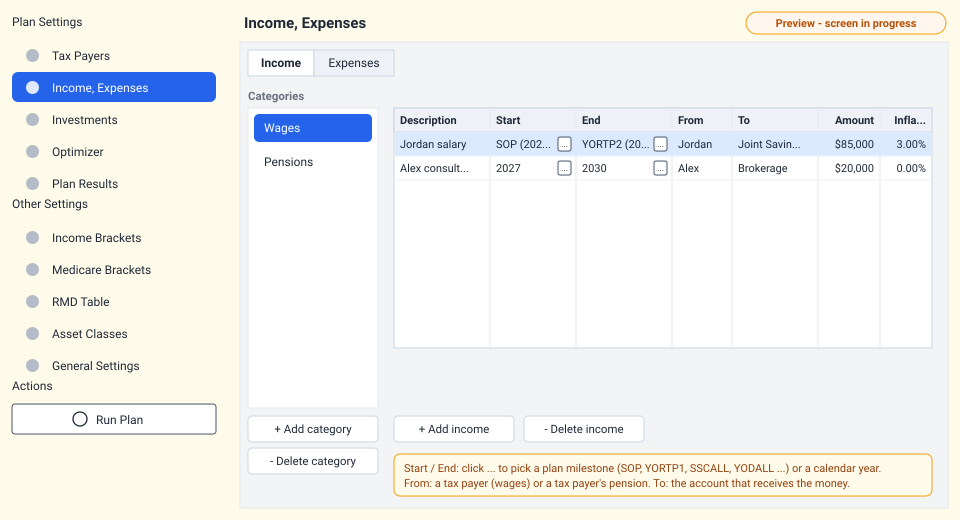
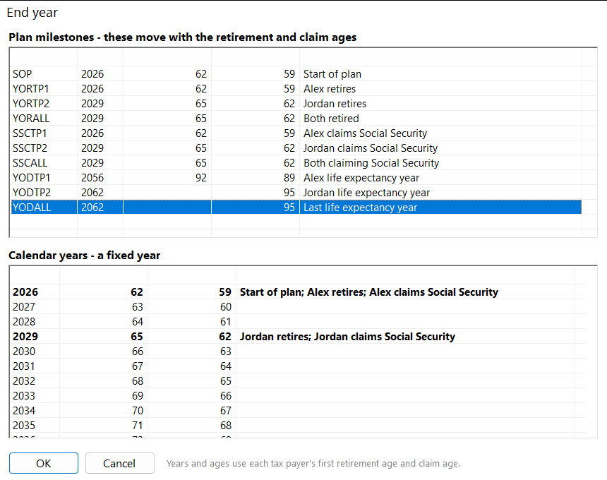

Income and expenses Preview
Income is money coming in from work or a pension; expenses are what you spend to live. Enter both as yearly amounts in today's dollars. Social Security, RMDs, taxes and Medicare premiums are calculated for you - don't enter them here.

Income
| Field | Meaning |
|---|---|
| Category | Groups your income (Wages and Pensions to start). Categories are only for organizing; they don't change the calculation. |
| Description | A name such as "Jordan salary". It appears in the results. |
| Start, End | The first and last year the income is paid (both included). Pick a calendar year or a plan milestone. New rows start at SOP (start of plan) and end at YODALL (last life expectancy year). |
| From | Who earns it. Choose a tax payer for wages, or a tax payer's Pension for a pension. |
| To | The account the money is paid into. It must hold at least one investment; the money is split between its investments by their Mix. |
| Amount | Yearly amount in today's dollars, before taxes. |
| Inflation rate | How much the amount grows each year. It defaults to the plan's general inflation rate. Use 0% for a pension without cost-of-living raises. |
Wages and pensions follow the retirement age
- Wages are paid only in the years before the tax payer's retirement year, and only between Start and End. They are reported on Form 1040 line 1a.
- Pensions are paid from the retirement year on, between Start and End. They are reported on line 5a and taxed as ordinary income.
- Both stop after the tax payer's life expectancy year.
Because wages already stop at retirement, a salary can simply run from SOP to YORTP1.
When the optimizer tries a later retirement age, the salary automatically runs longer.
Expenses
| Field | Meaning |
|---|---|
| Category | Groups your expenses (Essential and Discretionary to start). |
| Description | A name such as "Groceries" or "Travel". |
| Start, End | The first and last year of the expense (both included); a calendar year or a milestone. |
| From | Auto (recommended) or a specific account. If that account runs short, Auto pays the rest. |
| To | Always Living Expenses. |
| Amount | Yearly amount in today's dollars. |
| Inflation rate | Defaults to the general inflation rate. Healthcare often inflates faster. |
Paying an expense is a withdrawal. Selling from a brokerage account can create a capital gain, and taking money from an IRA or 401(k) is taxable income. The planner adds these to the year's taxes. See withdrawals and Auto.
Choosing start and end years

Click the button in a Start or End cell to open the picker. The top list has the plan milestones with the year each falls in and each tax payer's age; the bottom list has every plan year with the ages and what happens that year (retirement, Social Security, RMDs, life expectancy). Read more in plan milestones.
Checks before a run
When you run the plan, it stops with a message if:
- an income's From is not a current tax payer or pension;
- an income's To is not an account with at least one investment;
- an expense's From is neither Auto nor an existing account;
- a Start or End is not a valid year or milestone.